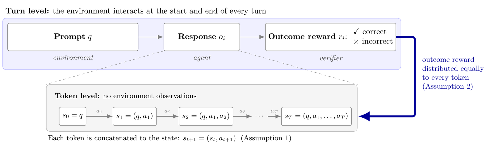
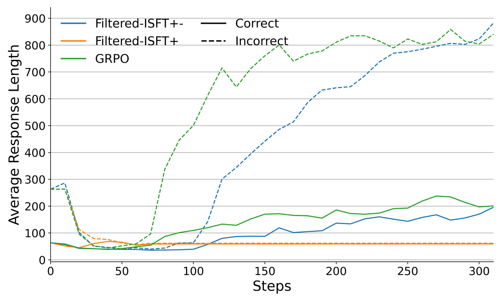
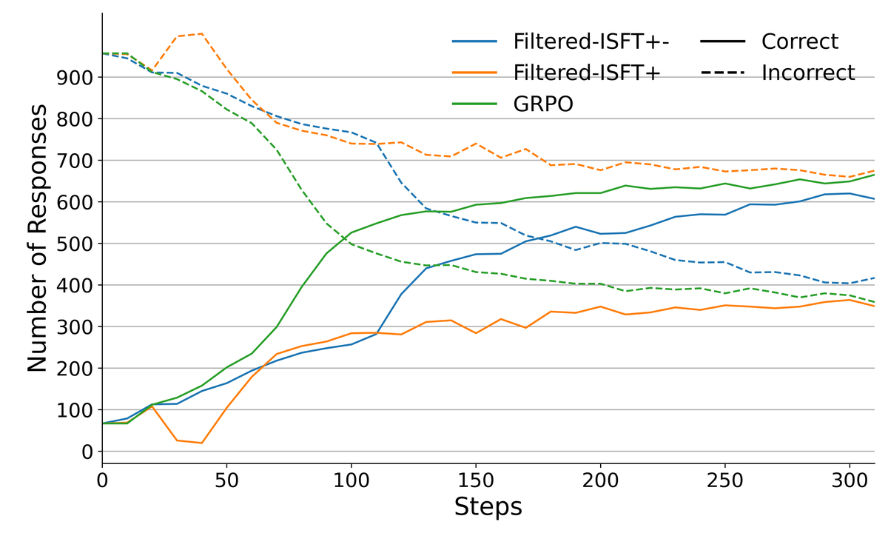

RL in Name Only? Analyzing the Structural Assumptions in RL Post-Training for LLMs
Under the assumptions that RLVR makes about the LLM as an MDP, on-policy GRPO reduces to filtered iterative supervised fine-tuning. The growth in response length traces back to the same assumptions, not to emergent reasoning.
S. R. Samineni, D. Kalwar, K. Valmeekam, K. Stechly, S. Kambhampati
Two structural assumptions
RL with verifiable rewards treats generation as an MDP in which the state is the question plus the tokens so far, the action is the next token, and a verifier returns one binary reward at the end. Two assumptions sit inside this formulation. The next state is the current state with one token appended, with no observation from the environment, so the MDP is degenerate. And GRPO copies the group-relative advantage of a response to every one of its tokens, so no credit is assigned within a response.

GRPO reduces to filtered iterative SFT
With no transition, each token is a (state, action) pair, and with the outcome copied to every token, each pair carries a label. The responses sampled for a question become an outcome-labeled dataset, and the GRPO update becomes a step of supervised fine-tuning on it, filtered by the verifier. We confirm this empirically by post-training Qwen2.5, Llama 3.2 and DeepSeek 7B with GRPO and with filtered iterative SFT on GSM8K, and the two perform comparably.

Where the length growth comes from
Because every token of a response gets the same advantage, a token's credit is divided by the length of its response, which favors short correct responses and long incorrect ones. The growth in length often read as the model learning to think is confined to the incorrect responses, and it appears only when the model is trained on them.


What it means
The gains of RLVR in post-training come from a supervised loss applied at each update, not from solving the credit-assignment problem that sets RL apart from supervised learning. GRPO-Unhinged takes this further and shows that the clipped GRPO update is a weighted hinge loss.